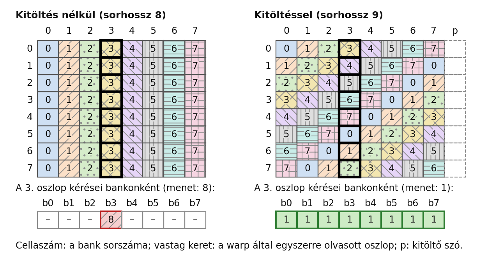

Két majdnem azonos GPU-kernel: az egyikben a
.
szál az a[t] elemet olvassa, a másikban az
a[8*t]-t. Mindkettő warponként 128 hasznos bájtot kér. A
könyv memóriamodelljében azonban az első warp 4 memóriatranzakciót
indít, a második 32-t: nyolcszor annyi adat mozog, ugyanakkora
eredményért. Memóriakorlátos kernelnél ez közvetlenül futásidő. Hasonló
meglepetést okoz egy mátrix transzponálása a GPU gyors, helyi
memóriájában: egyetlen kitöltő oszlop 16,5-szer kevesebb memóriamenetet
eredményez. Ez az alfejezet azt mutatja meg, mit lát a GPU
memóriarendszere, amikor egy warp (SIMT, warpok és
divergencia) egyszerre 32 címet kér.
A GPU adatai több szinten élnek, a kicsi és gyors tároktól a nagy és lassú felé:
| Szint | Láthatóság | Ki kezeli |
|---|---|---|
| regiszterek | egy szál | fordító |
| megosztott memória (shared memory) | egy blokk | a programozó |
| L1 cache | egy SM | hardver |
| L2 cache | a teljes GPU | hardver |
| globális memória (GDDR vagy HBM) | a teljes GPU | a programozó foglalja, a hardver szolgálja ki |
A táblázat azt mondja ki, hogy a GPU-n a legfontosabb gyors tár egy részét nem a hardver, hanem a program kezeli. A globális memóriát a hardver nem bájtonként, hanem rögzített méretű szegmensekben olvassa, ezért az számít, hogy a warp 32 címe hány szegmensre esik.
Figyeld meg az alsó blokkot: minden szegmensből egyetlen szó kell, a másik hét fölöslegesen utazik.
Definíció. A scratchpad (jegyzettömb-memória) olyan kis, gyors tár, amelynek tartalmát a program explicit módon kezeli: ő másolja be az adatot, ő dönti el, mi maradjon ott, és a címe nem globális memória másolata. Nincsenek címkék és találat/hiba döntések, ezért az elérés kiszámítható.
A cache (Lokalitás és a memóriahierarchia) ezzel szemben automatikusan tárolja a nemrég használt adatokat. A GPU-n a megosztott memória a blokk szálai közötti adatcsere és újrafelhasználás eszköze: például egy csempét egyszer beolvasnak a globális memóriából, majd sokszor olvassák a megosztott memóriából. Cserébe a programozó felel a szinkronizálásért (a másolás befejezése előtt senki nem olvashat) és a méretkorlátért, amely a foglaltságot is csökkenti (SIMT, warpok és divergencia). Sok NVIDIA GPU-n a megosztott memória és az L1 cache ugyanazt a fizikai tárat osztja (ellenőrizendő: generációfüggő, [S-CUDA]).
A globális memória HBM (high-bandwidth memory, a processzor mellé egymásra rakott memórialapkák széles sínnel) vagy GDDR (nagy átviteli sebességű grafikus DRAM). Mindkettő sávszélességre tervezett; késleltetésük nagy, amelyet a warpváltás rejt el. A konkrét számok típus- és generációfüggők.
Definíció. Koaleszcencia (összevonás): a hardver egy warp memóriautasításának 32 címét a lehető legkevesebb, bájtos, -re igazított tranzakcióba vonja. A könyv modellje bájtos szegmensekkel számol; a valódi egység architektúrafüggő (ellenőrizendő: [S-CUDA]).
A tranzakciók száma a különböző érintett szegmensek száma. Ha a . szál az címtől bájtot kér:
Szavakban: azt számolja meg, hány különböző szegmensbe esik a kért bájtok eleje vagy vége (a könyv példáiban , tehát ez elég), pedig az átvitt bájtok hasznos hányada.
Igazított kezdőcímnél, elemes lépésközzel és bájtos elemmel: ha , akkor (a 32 cím egyenletesen fed le bájtot); ha , minden szál külön szegmensbe esik, és .
Néhány következmény:
float = 128 bájt = 4 tranzakció;A megosztott memória bankokra oszlik: a modell 32 bankot használ 4 bájtos szavakkal (ellenőrizendő: tipikus NVIDIA-érték), . Egy menetben minden bank egy szót tud adni. Ha a warp több különböző szót kér ugyanabból a bankból, a kérés több menetben szolgálható ki:
Ez a bankütközés (bank conflict). Azonos szó többszöri kérése nem ütközik (a hardver szétszórja).
Lépésközös hozzáférésnél (. szál a . szó) a bankok indexei . Ezek különböző bankot adnak, és mindegyikbe szó esik, tehát . Páratlan lépésköznél nincs ütközés; a legrosszabb eset: mind a 32 kérés egy bankba megy.
Transzponálás. Egy 32×32-es float
csempe a megosztott memóriában, soronként tárolva. A warp egy
oszlopot olvas: a címek lépésköze a sorhossz, 32 szó,
tehát minden kérés ugyanabba a bankba megy. A megoldás a
kitöltés (padding): a sort 33 szó hosszúra foglaljuk,
az utolsó szót nem használjuk. A lépésköz 33,
,
a 32 kérés 32 különböző bankba esik.

Az ábra a 32-es eset kicsinyített mása (8 sáv, 8 bank). A kitöltéssel a bankindex lett, átlósan eltolódik, így az oszlop elemei szétszóródnak. A kódban egyetlen szám változik (illusztráció, itt nem fordítottuk le):
__shared__ float tile[32][33]; /* 32 hasznos elem + 1 kitöltő szó soronként */
/* a warp t. sávja a c. oszlop t. elemét olvassa: */
float v = tile[t][c];Továbbvitt eredmény. A koaleszcencia- és bankmodell: a globális memóriában egy warp utasítása annyi tranzakciót jelent, ahány különböző bájtos szegmenst érint (hasznos hányad ); a megosztott memóriában annyi menetet, ahány különböző szó esik a legterheltebb bankba (lépésközre ). A cél az egymás utáni globális és a bankok között szétszórt helyi elérés. Ezt a modellt használja a Szisztolikus tömbök és a TPU-elv és a Gyorsítók tervezési elvei: DSA, FPGA, közel-memória számítás.
A roofline-modell a GPU-ra változatlan: . A könyv tanító GPU-ja (feltételezett értékek, nem valódi termék): TFLOP/s, GB/s, gerincpont FLOP/bájt. A rossz hozzáférési minta a hasznos sávszélességet csökkenti: .
saxpy,
|
elérhető teljesítmény | |
|---|---|---|
| egymás utáni | 100% | 83 GFLOP/s |
| lépésköz 8 | 12,5% | 10 GFLOP/s |
A táblázat szerint a lépésköz a ferde tetőt lejjebb tolja, a
számítási csúcs elérhetetlen marad. Összevetésül a mérőgép CPU-ja
(i5-13400F, 2026-11-25):
GFLOP/s (10 szál, float FMA),
GB/s (6 szál, olvasás),
.
A tanító GPU gerincpontja hasonló, de mindkét tetője nagyságrenddel
magasabb.
CPU–GPU adatmozgatás. Ha a GPU külön memóriával rendelkezik, az adatot PCIe-n vagy NVLinken kell átvinni; ezek sávszélessége jellemzően jóval kisebb a GPU memóriájáénál (a konkrét érték verziófüggő, ellenőrizendő: [S-CUDA]). Egy egyszerű modell:
ahol a műveletek, a GPU memóriáján mozgó bájtok száma. A mozgatás drágább lehet, mint a számolás.
1. Tranzakciók (float,
).
a[t]: címek 0–124, szegmensek 0, 32, 64, 96: 4 darab.
a[t+1]: címek 4–128, a 128-as szegmens is kell: 5,
.
a[3*t]:
,
,
.
2. Bankok. : , két menet. : 16 menet. : 1 menet.
3. Transzponálás. Kitöltés nélkül a 32 oszlop olvasása egyenként 32 menet: ; a 32 sor írása (egymás utáni címek) soronként 1: összesen 1056. Kitöltéssel mind a 64 művelet egymenetes: . A kitöltés ára bájt, a csempe 3,1%-a.
4. Megéri-e a GPU? saxpy,
elem (x és y egyenként 0,5 GB),
GB/s (feltételezés). A GPU-n a forgalom elemenként 12 bájt, 1,5 GB,
ms. Átvitel: x és y oda (1 GB), y vissza (0,5 GB):
ms. Összesen 63 ms. A CPU-n
ms: a GPU lassabb. Ha viszont az adat 100 iteráción át
a GPU-n marad:
ms a
ms ellenében, 8,9-szeres gyorsulás.
Az archkit.simd koaleszcencia- és bankszámlálója:
import sys; sys.path.insert(0, "code")
from archkit import perf, simd
for name, kw in [("a[t]", dict(kind="seq")), ("a[t+1]", dict(kind="seq", offset=1)),
("a[3t]", dict(kind="stride", stride=3)),
("AoS mező (16 B)", dict(kind="stride", stride=4)),
("véletlen", dict(kind="random"))]:
c = simd.coalesce(simd.pattern(**kw))
print(f"{name:16} {c.transactions:2} tranzakció, {c.transferred:4} B átvitel, "
f"u = {100 * c.utilization:5.1f}%")
for stride in (1, 6, 16, 32, 33):
b = simd.bank_access(simd.pattern("stride", stride=stride))
print(f"lépésköz {stride:2}: {b.passes:2} menet, {b.used_banks:2} használt bank")
for pad in (0, 1):
r = simd.transpose_passes(32, pad)
print(f"transzponálás, kitöltés {pad}: olvasás {r['read']:4}, írás {r['write']}, "
f"összes {r['total']:4} menet, {r['bytes']} bájt")a[t] 4 tranzakció, 128 B átvitel, u = 100.0%
a[t+1] 5 tranzakció, 160 B átvitel, u = 80.0%
a[3t] 12 tranzakció, 384 B átvitel, u = 33.3%
AoS mező (16 B) 16 tranzakció, 512 B átvitel, u = 25.0%
véletlen 29 tranzakció, 928 B átvitel, u = 13.4%
lépésköz 1: 1 menet, 32 használt bank
lépésköz 6: 2 menet, 16 használt bank
lépésköz 16: 16 menet, 2 használt bank
lépésköz 32: 32 menet, 1 használt bank
lépésköz 33: 1 menet, 32 használt bank
transzponálás, kitöltés 0: olvasás 1024, írás 32, összes 1056 menet, 4096 bájt
transzponálás, kitöltés 1: olvasás 32, írás 32, összes 64 menet, 4224 bájtA tanító GPU és a mért CPU összevetése, a saxpy
kitelepítési modelljével:
def gpu_saxpy_ms(iters, link=25e9, beta=500e9, peak=10e12, n=125e6):
compute = max(2 * n / peak, 12 * n / beta)
return 1e3 * (12 * n / link + iters * compute) # x, y oda; y vissza: 12n bájt
_, rows = perf.read_bench_csv("figures/data/ca051-stream.csv")
cpu_bw = max(r["median_gbps"] for r in rows if r["kernel"] == "read") * 1e9
for u in (1.0, 0.125):
p = perf.roofline(1 / 6, peak=10e12, bandwidth=u * 500e9)
print(f"GPU saxpy, u = {u:5.3f}: {p / 1e9:5.1f} GFLOP/s")
for iters in (1, 10, 100):
cpu = 1e3 * iters * 12 * 125e6 / cpu_bw
print(f"{iters:3} iteráció: GPU {gpu_saxpy_ms(iters):6.1f} ms, CPU {cpu:6.1f} ms")GPU saxpy, u = 1.000: 83.3 GFLOP/s
GPU saxpy, u = 0.125: 10.4 GFLOP/s
1 iteráció: GPU 63.0 ms, CPU 32.1 ms
10 iteráció: GPU 90.0 ms, CPU 320.9 ms
100 iteráció: GPU 360.0 ms, CPU 3209.1 msEgy iterációnál az adatátvitel dönti el a versenyt; sok iterációnál a GPU sávszélessége.
a[t] mellett: egyetlen
tranzakció. A „véletlen” mintánál viszont a nagy szegmens a kihasználást
rontja. Hasonlítsd össze a 32 B-os és 128 B-os eredményt.a[2*t] elérésnél double elemekkel? Mekkora
a kihasználás?float) minden szál 2 mezőt olvas, p[t].x és
p[t].y, ahol a két mező egymás mellett van. Hány tranzakció
kell a két betöltéshez összesen AoS és SoA elrendezésben? Az átvitt
bájtokat is add meg.simd.bank_access
segítségével keresd meg
esetére a legkisebb kitöltést, amellyel az olvasás egy menet, és
fogalmazd meg a szabályt.A GPU memóriarendszere warponként dolgozik. A globális memóriát
bájtos szegmensekben olvassa (koaleszcencia): az egymás utáni, igazított
float-címek 32 bájtos szegmensekkel 4 tranzakciót, a nagy
lépésköz vagy a véletlen címek akár 32-t adnak; a hasznos hányad
,
a hatásos sávszélesség
.
Ezért kedvezőbb az SoA, mint az AoS elrendezés. A megosztott memória
kézzel kezelt, bankokra osztott scratchpad: a menetek száma a
legterheltebb bank különböző szavainak száma, lépésközre
;
páratlan sorhosszra kitöltve a transzponálás ütközésmentes. A roofline a
GPU-n is érvényes, a CPU–GPU átvitel külön tag, amely kis feladatnál
mindent eldönthet. Ez a koaleszcencia- és bankmodell a gyorsítóknál is
visszatér.
x) lépésköze 32 B,
:
32 tranzakció, a két betöltésé összesen 64, átvitt 2048 B 256 kért
bájtért. (Ha a hardver a két mezőt egy utasításban kérné, a 32 szegmens
ugyanaz maradna.) SoA: mezőnként 4, összesen 8 tranzakció, 256 B.found = []
for w in range(28, 41):
pad = next(p for p in range(8)
if simd.bank_access([4 * t * (w + p) for t in range(32)]).passes == 1)
found.append(f"w={w}: {pad}")
for i in range(0, len(found), 5):
print(", ".join(found[i:i + 5]))w=28: 1, w=29: 0, w=30: 1, w=31: 0, w=32: 1
w=33: 0, w=34: 1, w=35: 0, w=36: 1, w=37: 0
w=38: 1, w=39: 0, w=40: 1Páros sorhossznál 1, páratlannál 0 a legkisebb kitöltés: a sorhossz legyen páratlan, mert ekkor relatív prím a 32-höz.